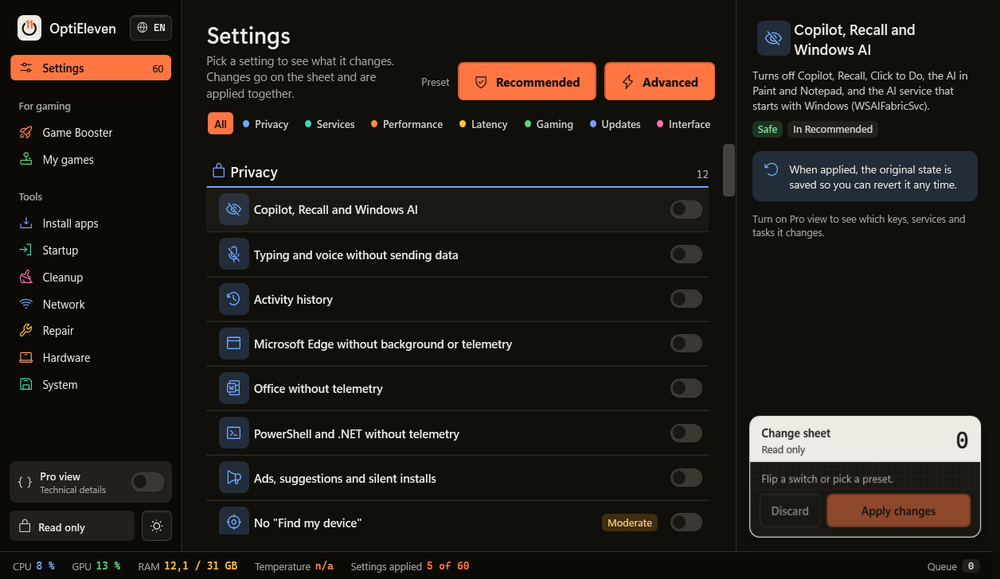

OptiEleven
A reversible Windows 11 optimizer for gaming. Strip telemetry and bloat, free RAM before you play, and undo any change with one click.
irm bila4l4.github.io/OptiEleven | iexRight-click Start, open Terminal, paste it and press Enter. It downloads the latest release and opens the panel as administrator.

- 60 tweaks with a preview of every registry value, service and task they change.
- Everything is backed up and can be reverted, even months later.
- Boost FPS, Game Booster, cleanup, network, repairs and per-game settings.
- English and Spanish, dark and light themes. MIT licensed.